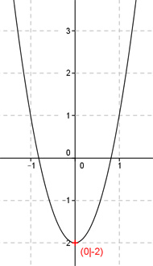

Aufgabe 13 Eine nach oben geöffnete und um den Faktor 3 gestreckte Parabel hat ihren Scheitelpunkt im Punkt (0|-2). Wie lautet ihre Funktionsgleichung?  Scheitelpunktform einer Parabel: f(x) = a(x- xs)2 + ys Um den Faktor 3 gestreckt bedeutet a = 3 Punkt (0|-2) in die Scheitelpunktform eingesetzt (xs = 0, ys = -2): f(x) = 3(x - 0)2 - 2 Gesuchte Funktionsgleichung: f(x) = 3x2 - 2